Pivotal NYC
Conference room name research
Altman
621 6th Avenue, circa 1877

Constable
115 Fifth Avenue, circa 1876

Pierrepont (5th)
103 Fifth Avenue (17th), circa 1895


Spero
27 West 21st, circa 1908


Siegel-Cooper (6th)
666 Sixth Venue, circa 1896
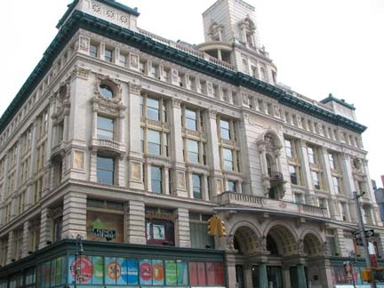 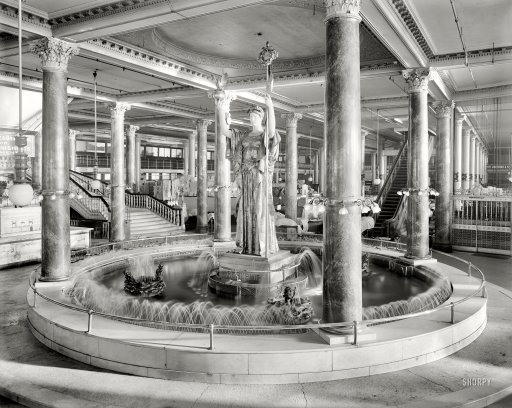
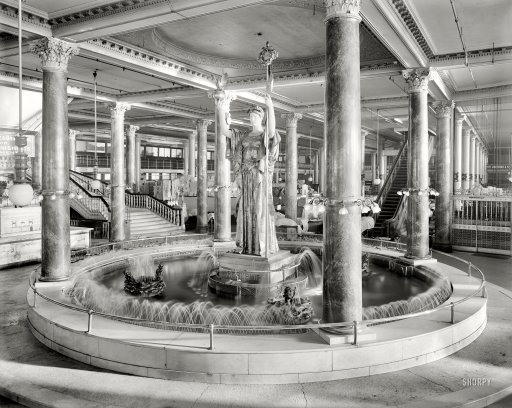


O'Neill (6th)
Sixth Avenue at 20th, circa 1887

Scribner
155 Fifth, circa
bookstore

Sohmer
170 Fifth Avenue, circa 1897
pianos

Stern (23rd Near 6th)
West 23rd, circa 1878

Macy
Sixth Avenue and 14th Street, circa 1858
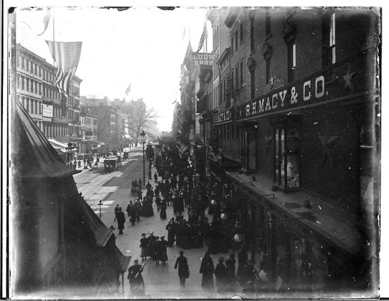
Adams
675 Sixth, circa 1899

Ehrich
Sixth Ave at 22th Street, circa 1889
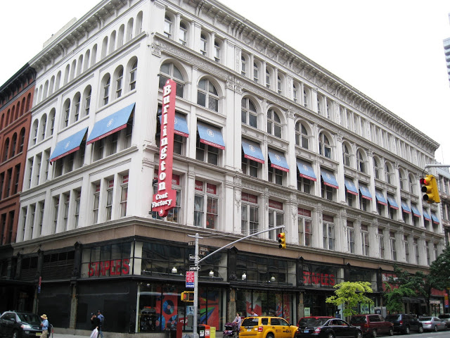
Limelight
20th St at Sixth Avenue, circa 1846
"english country parish"

Simpson-Crawford
641 Sixth Ave, circa 1902
 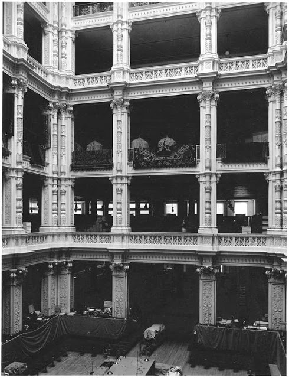
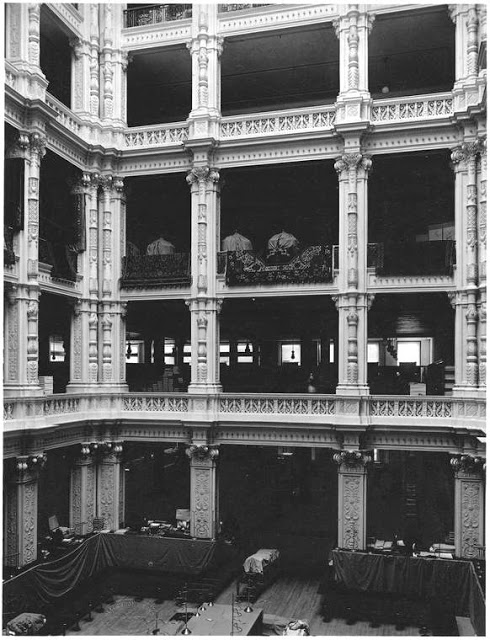
Century Club
111 E 15th, circa 1847

Ditson
East 34th, circa 1907
not really in the neighborhood

Cammeyer
Sixth Ave and 20th St, circa 1892


Stewart
Fifth Avenue at 35th, circa 1914

Best & Co.
Sixth Avenue near 23rd, circa 1879
couldn't find a photo
Bergdorf Goodman (5th)
Fifth Avenue and 32nd, circa 1906
couldn't find a photo
Goelet
900 Broadway at 20th, circa 1886

Gorham
Broadway and 19th, circa 1884


Hoyt
Broadway and 18th, circa 1868


Warren
903 Broadway at 20th, circa 1891
 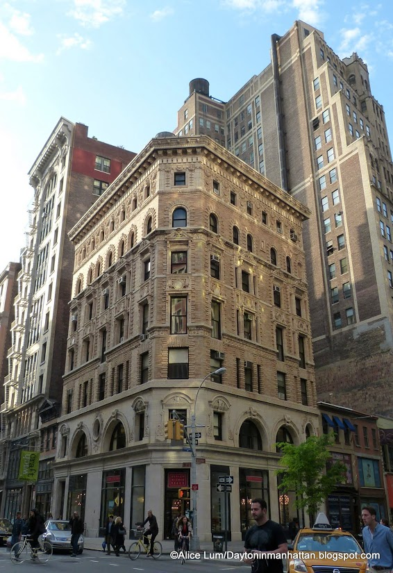
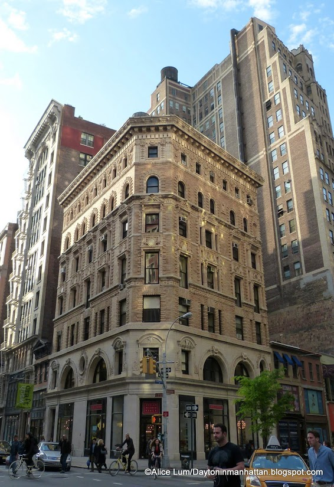
Mortimer
935 Broadway at 22nd, circa 1862
civil war period architecture

Lord & Taylor
Broadway and 19th, circa 1870
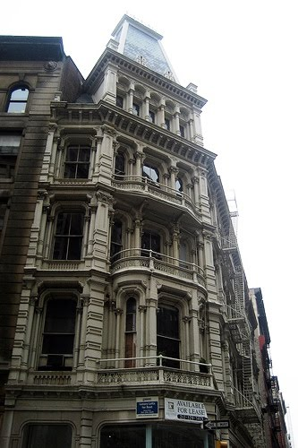
Wanamaker
Broadway and 10th, circa 1906
"the iron palace"
not really in the neighborhood, though
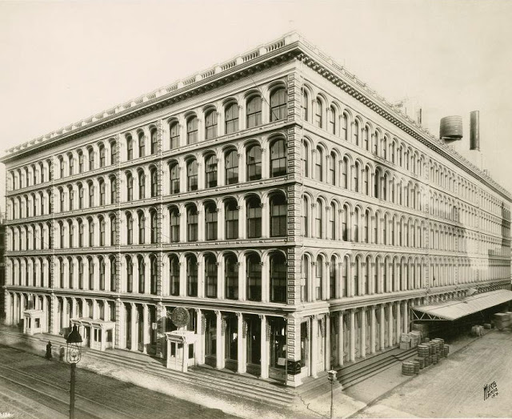
Sloane
888 Broadway, circa 1881

McCreery
Broadway at 11th, circa 1869
not really in the neighborhood
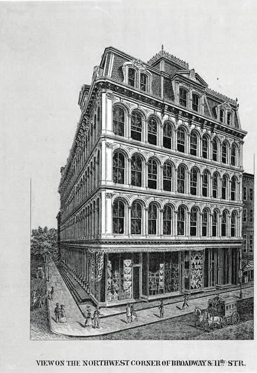
Hawes
872 Broadway at 18th, circa 1847
smaller

Gimbel
???
Saks
???
Parish
???
Errico
???
Macintyre
???